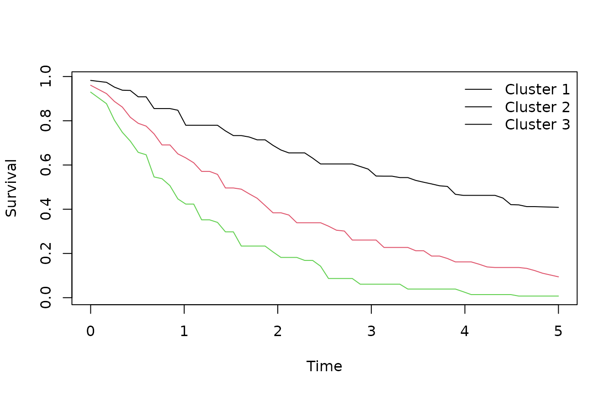
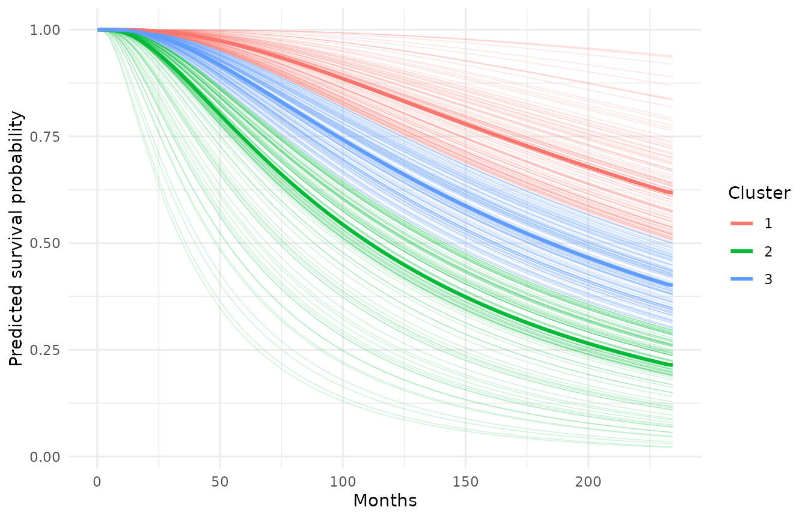
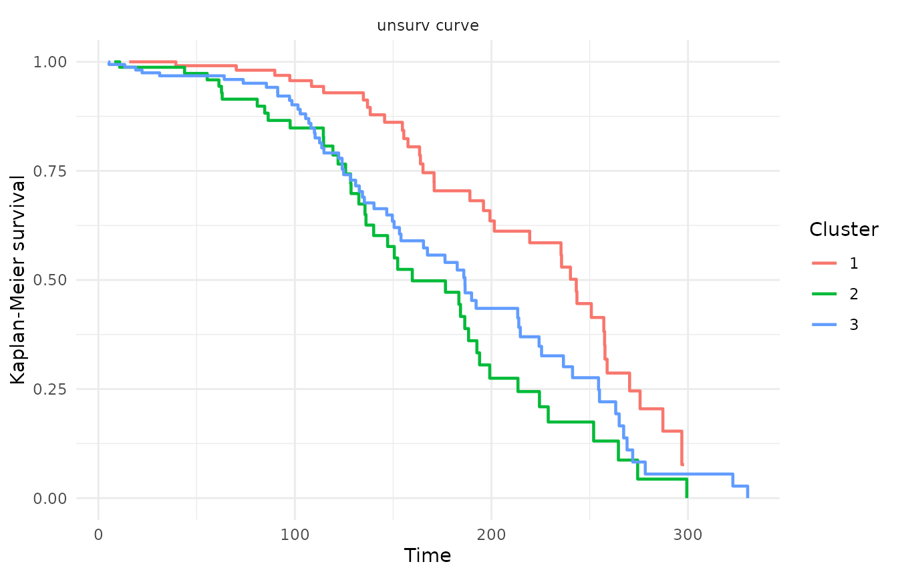

vignettes/unsurv-intro.Rmd
unsurv-intro.Rmdunsurv clusters full predicted survival trajectories rather than baseline covariates or a single risk score. Each observation is one survival probability curve on a shared time grid, and the package groups patients whose whole predicted trajectory has the same shape.
This vignette has two parts:
unsurv(), plot(), predict(), and
unsurv_stability();Three prognosis groups with different exponential hazards, plus a little noise so the curves are not perfectly smooth.
library(unsurv)
set.seed(2026)
n <- 150
Q <- 60
sim_times <- seq(0, 5, length.out = Q)
group <- sample(1:3, n, TRUE, prob = c(0.35, 0.4, 0.25))
haz <- c(0.18, 0.45, 0.8)[group]
S <- sapply(sim_times, function(t) exp(-haz * t))
S <- S + matrix(rnorm(n * Q, 0, 0.02), nrow = n)
S[S < 0] <- 0
S[S > 1] <- 1Leaving K = NULL lets unsurv choose the
number of clusters by the mean silhouette width over
2:K_max.
sim_fit <- unsurv(S, sim_times, K = NULL, K_max = 6, distance = "L2",
enforce_monotone = TRUE, smooth_median_width = 5,
standardize_cols = TRUE, eps_jitter = 0.0005, seed = 1)
sim_fit
#> unsurv (PAM) fit
#> K:3
#> distance:L2 silhouette_mean:0.810
#> n:150 Q:60Key slots: K (chosen cluster count),
clusters (assignment per curve), medoids
(representative curves), silhouette_mean.
plot(sim_fit)
Cluster medoid survival curves (simulated data).
New curves must be on the same time grid; the fitted preprocessing (clamping, monotonicity, smoothing, standardization) is reused automatically.
predict(sim_fit, S[1:5, ])
#> [1] 1 1 2 2 1The file extdata/metabric_survdnn_curves.rds reproduces
the worked example in
El Badisy I (2026). “unsurv: clustering individualized survival curves.” Bioinformatics Advances, 6(1), vbag218. doi:10.1093/bioadv/vbag218
It was produced by data-raw/metabric_survdnn_curves.R
with the same pipeline as the paper’s scripts:
20260615) into train /
partition / validation;loss = "aft") fitted on the
training patients only;The shipped object contains only model-predicted
probabilities and the (time, status) pair for each patient
— no METABRIC covariates or patient identifiers — so the vignette
reproduces the paper figure without importing survdnn,
biostatlab, or torch at build time. Regenerate
it by running data-raw/metabric_survdnn_curves.R from the
package root.
f <- system.file("extdata", "metabric_survdnn_curves.rds", package = "unsurv")
mb <- readRDS(f)
str(mb, max.level = 1)
#> List of 6
#> $ times : num [1:100] 0.1 2.47 4.83 7.2 9.56 ...
#> $ S_partition : num [1:367, 1:100] 1 1 1 1 1 1 1 1 1 1 ...
#> $ S_validation: num [1:369, 1:100] 1 1 1 1 1 1 1 1 1 1 ...
#> $ os_time :List of 2
#> $ os_event :List of 2
#> $ provenance : chr "survdnn (AFT) predicted survival curves for the METABRIC cohort, reproducing the worked example in El Badisy (2"| __truncated__
cat(mb$provenance)
#> survdnn (AFT) predicted survival curves for the METABRIC cohort, reproducing the worked example in El Badisy (2026), Bioinformatics Advances 6(1), vbag218, doi:10.1093/bioadv/vbag218. Generated by data-raw/metabric_survdnn_curves.R with seed 20260615. Contains only model-predicted probabilities and (time, status); no METABRIC covariates or patient identifiers.mb$S_partition is a 367 x 100 matrix of predicted
survival probabilities (one row per patient), mb$times the
shared time grid in months, and mb$os_time /
mb$os_event the observed outcomes for each set.
Following the paper, we fix K = 3 and cluster the
partition-set curves.
fit <- unsurv(mb$S_partition, mb$times, K = 3, distance = "L2",
enforce_monotone = TRUE, smooth_median_width = 3,
standardize_cols = FALSE, eps_jitter = 0, seed = 20260615)
fit
#> unsurv (PAM) fit
#> K:3
#> distance:L2 silhouette_mean:0.512
#> n:367 Q:100
library(ggplot2)
grid_n <- length(mb$times)
curf <- data.frame(
id = rep(seq_len(nrow(mb$S_partition)), each = grid_n),
time = rep(mb$times, times = nrow(mb$S_partition)),
survival = as.vector(t(mb$S_partition)),
cluster = factor(rep(fit$clusters, each = grid_n))
)
medf <- data.frame(
time = rep(mb$times, times = nrow(fit$medoids)),
survival = as.vector(t(fit$medoids)),
cluster = factor(rep(seq_len(nrow(fit$medoids)), each = grid_n))
)
ggplot(curf, aes(time, survival, group = id, colour = cluster)) +
geom_line(linewidth = 0.25, alpha = 0.20) +
geom_line(data = medf, aes(group = cluster), linewidth = 1.1) +
labs(x = "Months", y = "Predicted survival probability", colour = "Cluster") +
theme_minimal(base_size = 11)
Predicted survival curves coloured by unsurv cluster, with medoid prototypes (thick lines).
The clusters are defined on the partition set; the validation patients are assigned out-of-sample by nearest medoid.
A common alternative is to cluster a single risk summary. Here we
take the predicted risk 1 - S(t) at the median grid time
and run PAM on it, then assign the validation set by nearest cluster
mean.
h <- which.min(abs(mb$times - stats::median(mb$times)))
risk_p <- 1 - mb$S_partition[, h]
risk_v <- 1 - mb$S_validation[, h]
pam_scalar <- cluster::pam(as.matrix(risk_p), k = 3)
centres <- tapply(risk_p, pam_scalar$clustering, mean)
scalar_v <- vapply(risk_v, function(v) which.min(abs(v - centres)), integer(1))unsurv_compare() summarizes each partition against the
observed outcomes — per-cluster Kaplan-Meier medians — and reports the
Adjusted Rand Index of each partition against a reference. (A log-rank
test is deliberately not reported: the partitions are fit to separate
the curves, so a log-rank test against those same labels is
circular.)
cmp_part <- unsurv_compare(
list(`unsurv curve` = fit$clusters, `scalar risk` = pam_scalar$clustering),
mb$os_time$partition, mb$os_event$partition,
reference = "unsurv curve"
)
cmp_part$summary
#> method K min_size max_size ari_ref
#> 1 unsurv curve 3 102 144 1.0000000
#> 2 scalar risk 3 91 145 0.8334476
cmp_part$cluster_summary
#> cluster n events median_survival method
#> 1 1 121 42 229.3333 unsurv curve
#> 2 2 102 52 166.6667 unsurv curve
#> 3 3 144 68 184.8000 unsurv curve
#> 4 1 131 48 229.3333 scalar risk
#> 5 2 91 48 164.7333 scalar risk
#> 6 3 145 66 189.7333 scalar riskRepeating on the held-out validation set checks that the survival ordering of the clusters generalizes:
cmp_val <- unsurv_compare(
list(`unsurv curve` = val_clusters, `scalar risk` = scalar_v),
mb$os_time$validation, mb$os_event$validation,
reference = "unsurv curve"
)
cmp_val$cluster_summary
#> cluster n events median_survival method
#> 1 1 125 37 243.1667 unsurv curve
#> 2 2 81 40 159.7333 unsurv curve
#> 3 3 163 63 186.5333 unsurv curve
#> 4 1 137 41 240.2000 scalar risk
#> 5 2 69 39 152.3000 scalar risk
#> 6 3 163 60 186.6000 scalar risk
autoplot(unsurv_compare(
list(`unsurv curve` = val_clusters),
mb$os_time$validation, mb$os_event$validation
))
Kaplan-Meier curves by unsurv cluster on the validation set.
Resampling the partition set gives a sense of how reproducible the clustering is under perturbation.
stab <- unsurv_stability(
mb$S_partition, mb$times, fit,
B = 30, frac = 0.7, mode = "subsample",
jitter_sd = 0.005, weight_perturb = 0.1, eps_jitter = 0,
return_distribution = TRUE
)
stab$mean
#> [1] 0.8488424Higher mean ARI indicates more reproducible clusters.
times must be strictly increasing and match the number
of columns in S.enforce_monotone = TRUE or increase
smooth_median_width to an odd integer >= 3.distance = "L1" for robustness to large deviations
at a few time points.weights lets you emphasize clinically important time
windows; weights are normalized internally.seed inside unsurv() for deterministic
PAM initialization and silhouette-based K selection.